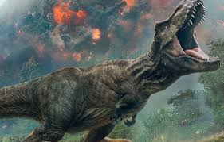
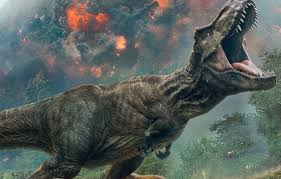

Tyrannosaurus Rex, often called the "king of dinosaurs", is one of the most important and dangerous creatures on Earth. It lived in the late Cretaceous period, approximately 68-66 million years ago, in North America. Its extraordinary dimensions and powerful structure constitute one of the most iconic dinosaurs in history.
 Tyrannosaurus Rex reached a length of about 12-13 meters and a weight of up to 8 tons, which made it one of the largest carnivorous dinosaurs of all time. Its massive skull was equipped with huge, conical teeth that could be up to 30 centimeters long. These enormous jaws and teeth allowed the Tyrannosaurus to effectively catch and crush its prey, making it one of the most effective predators in history. Their enormous strength was enough to separate the victims' flesh and even their bones.

Tyrannosaurus Rex also had a powerful tail and strong limbs that allowed it to move and jump quickly while hunting. Its large, round eyes gave it a wide field of vision, allowing it to track its prey's movements even from a distance. While powerful and fearsome, T. rex may also have exhibited some social behavior, as suggested by the discovery of T. rex footprints in one location. Some scientists suggest that they may have hunted in groups or at least tolerated the presence of their relatives around food.
Tyrannosaurus Rex reached a length of about 12-13 meters and a weight of up to 8 tons, which made it one of the largest carnivorous dinosaurs of all time. Its massive skull was equipped with huge, conical teeth that could be up to 30 centimeters long. These enormous jaws and teeth allowed the Tyrannosaurus to effectively catch and crush its prey, making it one of the most effective predators in history. Their enormous strength was enough to separate the victims' flesh and even their bones.

Tyrannosaurus Rex also had a powerful tail and strong limbs that allowed it to move and jump quickly while hunting. Its large, round eyes gave it a wide field of vision, allowing it to track its prey's movements even from a distance. While powerful and fearsome, T. rex may also have exhibited some social behavior, as suggested by the discovery of T. rex footprints in one location. Some scientists suggest that they may have hunted in groups or at least tolerated the presence of their relatives around food.